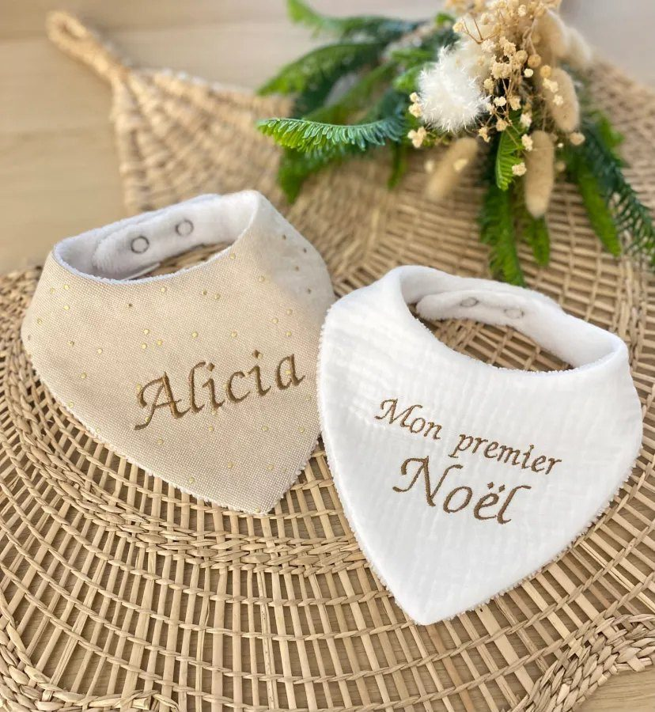
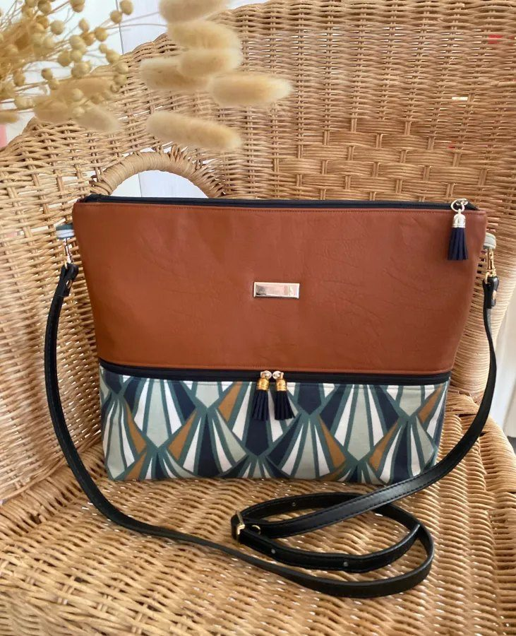
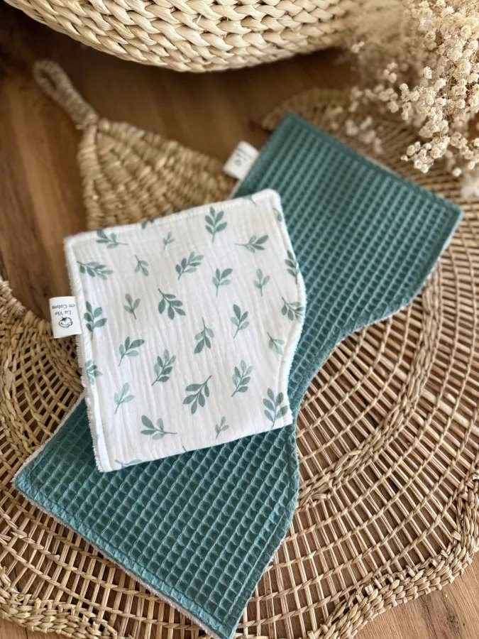
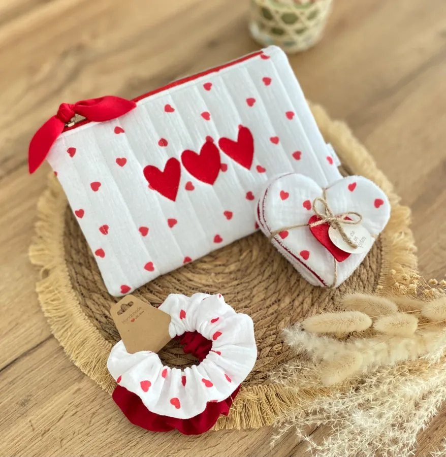
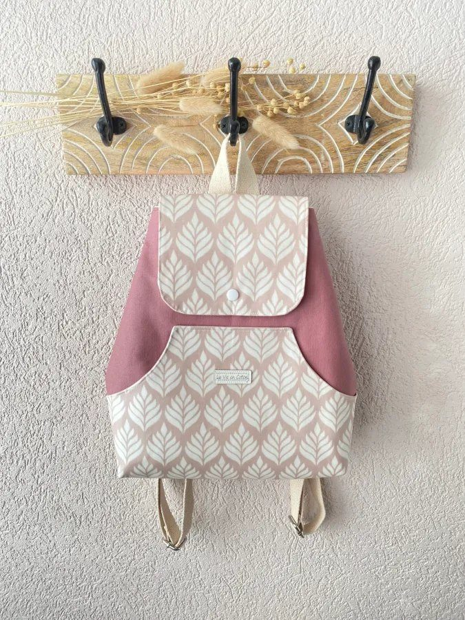
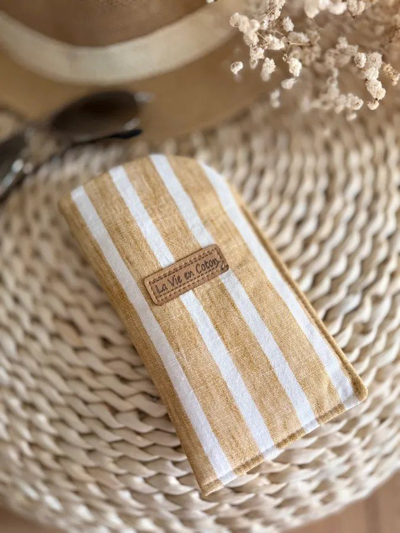
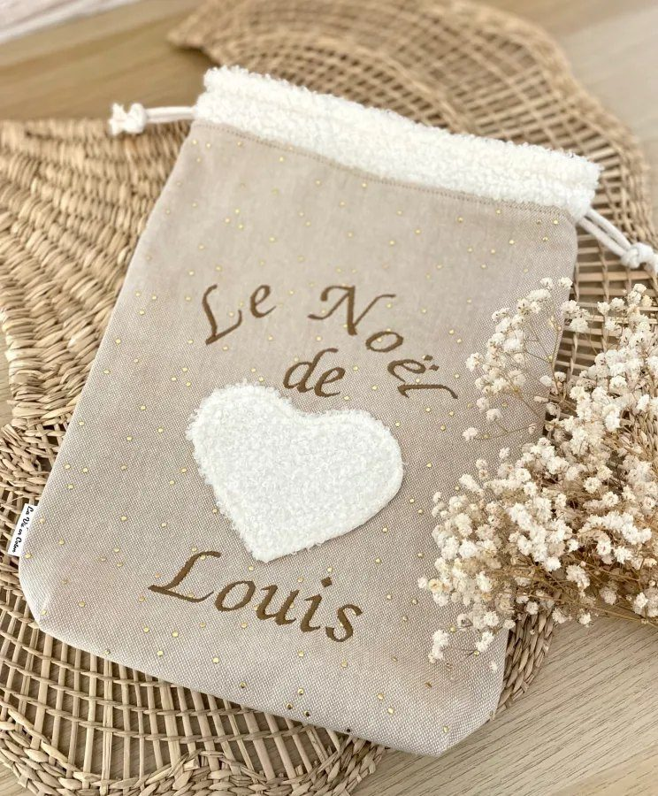
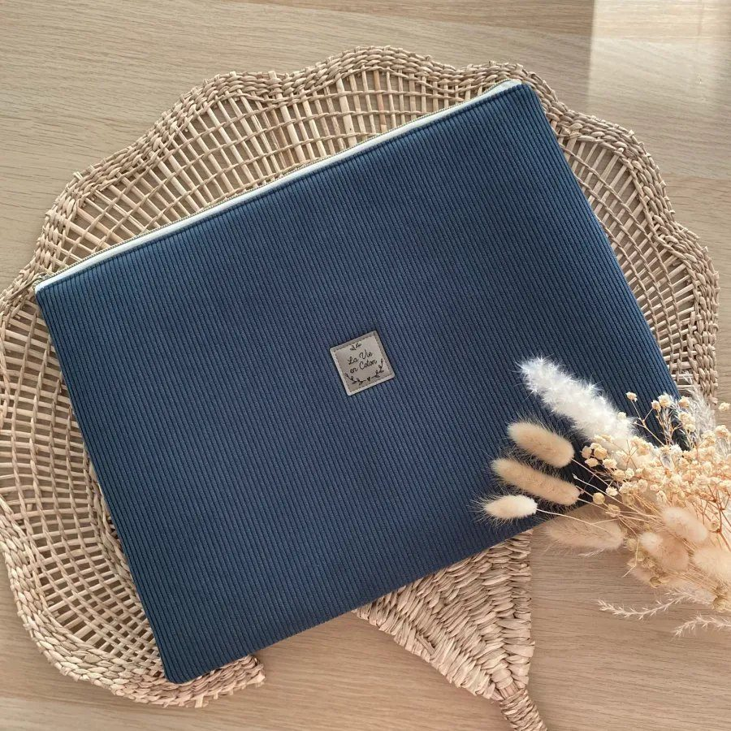
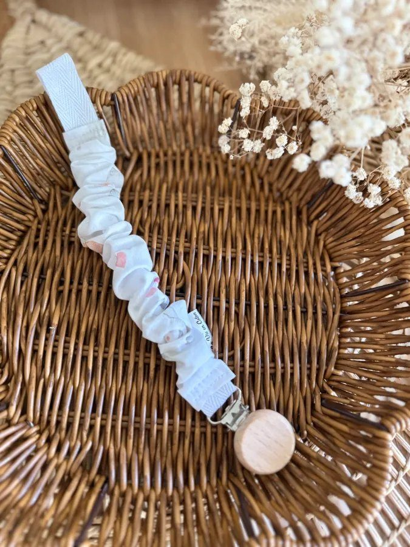
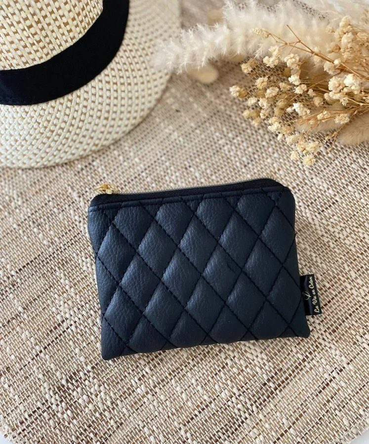

Des créations textiles uniques, faites main en Suisse.
Des pièces colorées, personnalisables et confectionnées avec soin pour petits et grands.










Idées cadeaux
Des créations uniques à offrir pour toutes les occasions.
Fait main en Suisse
Chaque création est imaginée et confectionnée avec soin dans mon atelier.
Des créations uniques
De jolis tissus, des détails soignés et des finitions auxquelles j'accorde beaucoup d'importance.
Personnalisable
Ajoutez un prénom pour créer une pièce unique et pleine d'attention.
Des tissus choisis avec soin
Des matières sélectionnées avec attention, dont des tissus certifiés OEKO-TEX et de qualité.
Donnez une touche encore plus personnelle à votre création.
Un prénom, une création unique.
Parce que les plus beaux cadeaux sont souvent ceux qui ont été pensés spécialement pour quelqu'un, plusieurs créations La Vie en Coton peuvent être personnalisées avec un prénom ou un petit mot doux de votre choix.
Une jolie attention pour une naissance, un anniversaire ou simplement pour faire plaisir… ou une création rien que pour soi.
Les créations personnalisables« Imaginer une création qui sera offerte, personnalisée pour quelqu'un ou simplement choisie pour se faire plaisir, c'est ce qui rend cette aventure si belle à mes yeux. »Paula Mon histoire
Avis clients
Les avis déjà laissés par vos clientes et clients s'afficheront ici.
Les avis déjà laissés par vos clientes et clients s'afficheront ici.
Les avis déjà laissés par vos clientes et clients s'afficheront ici.